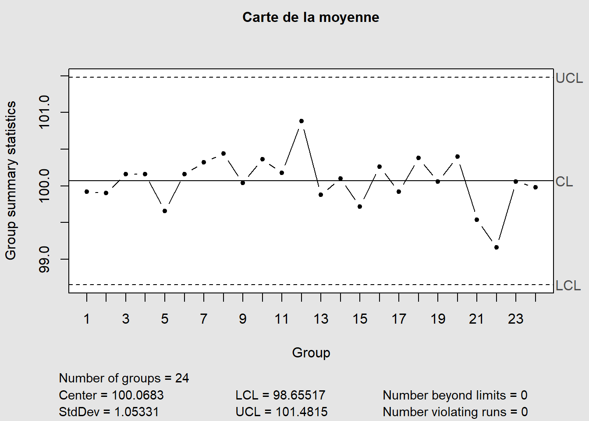
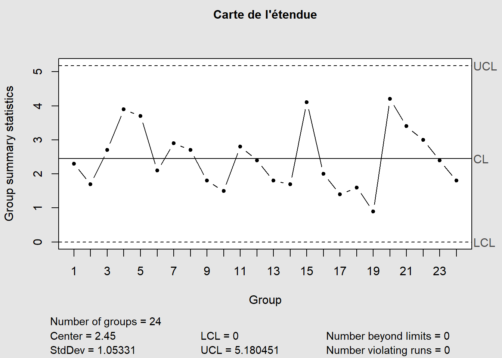
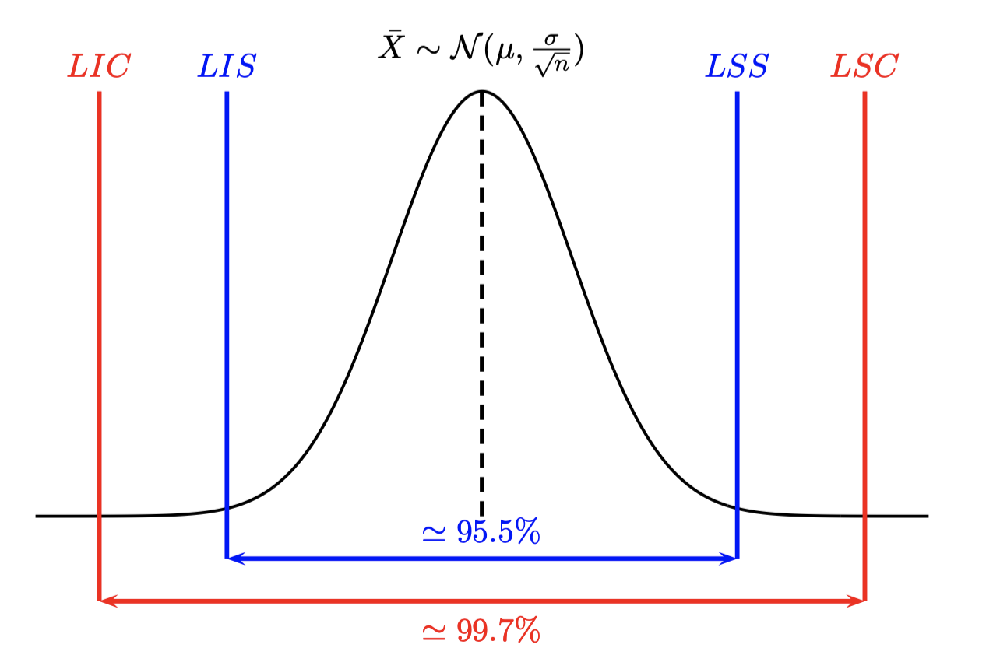
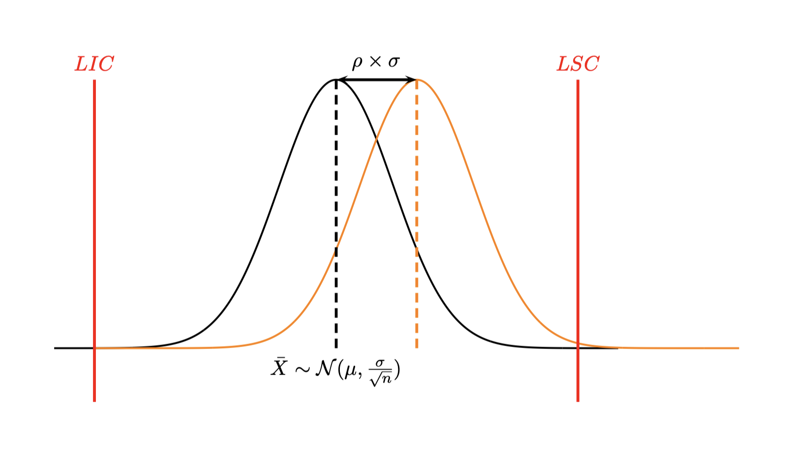
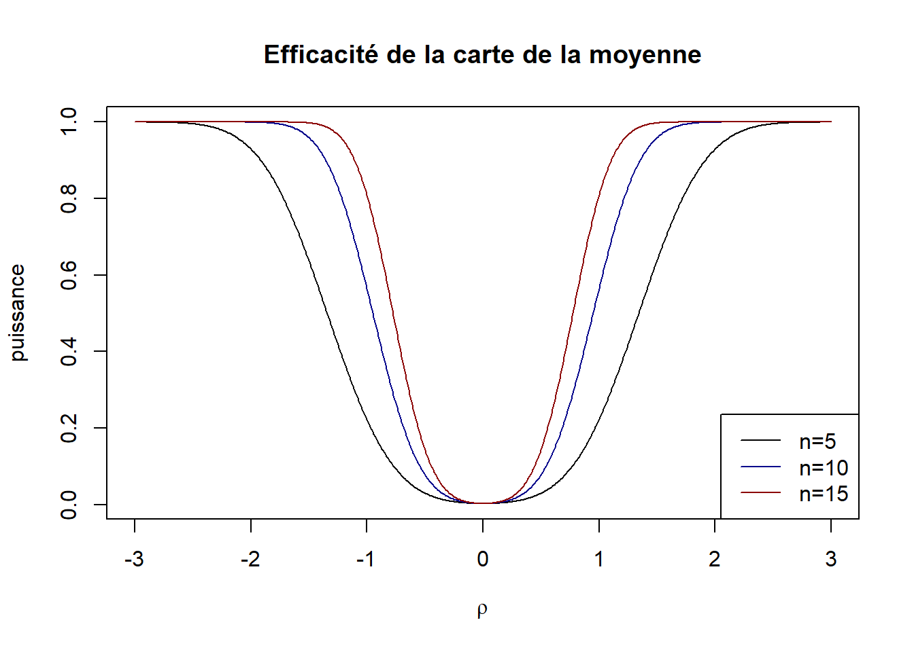
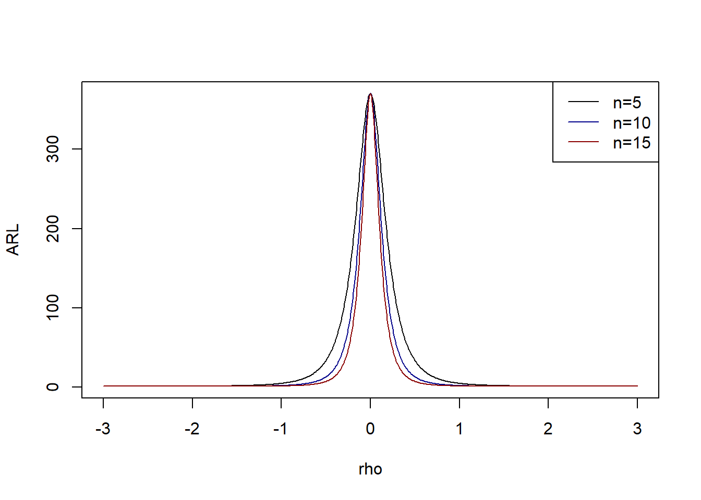
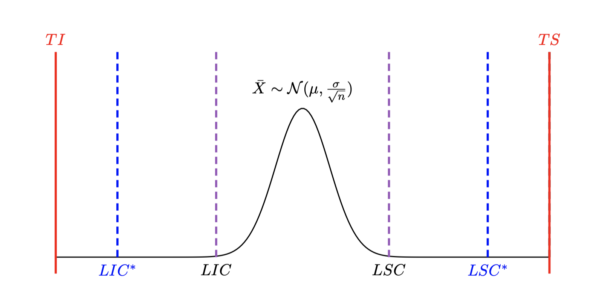
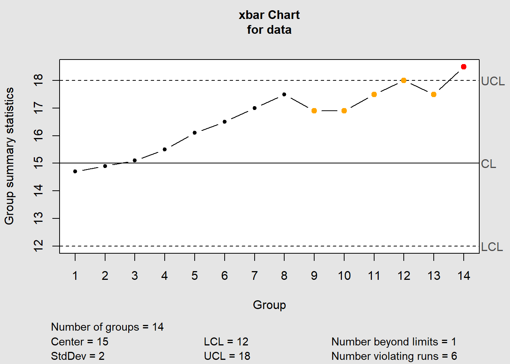
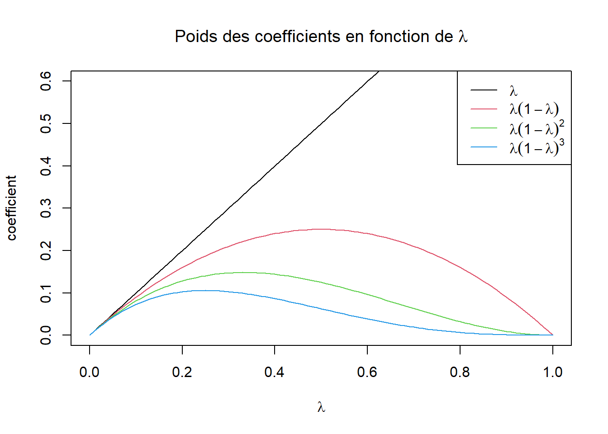
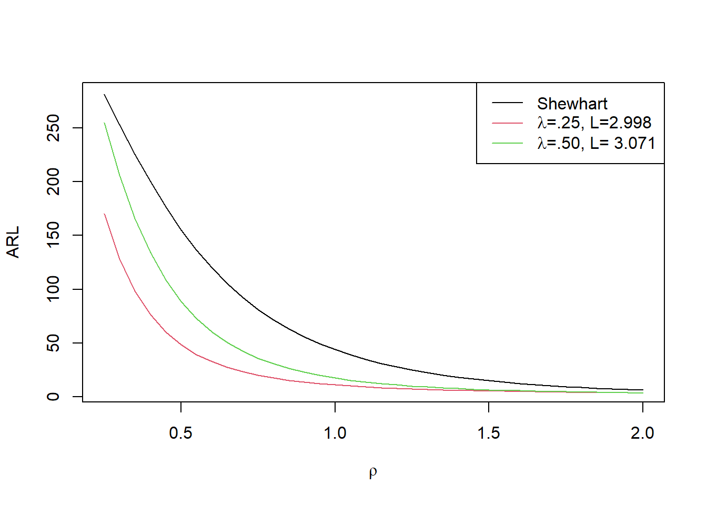

S’utilisent dans de très nombreux secteurs d’activité (industrie, transport, service, …)
Suivi et/ou amélioration d’un système de production
Avantages
Très faciles à mettre en oeuvre
Très faciles à interpréter (graphiques)
Inconvénients
Ne tient pas a priori compte des tolérances
N’est pas toujours efficace (ex : si problème de déviation progressive)
Comprendre les variations des procédés de fabrication
On distingue plusieurs causes qui peuvent induire des variations dans un système de production :
causes aléatoires (communes) elles sont en grand nombre avec un effet individuel faible. On peut les modéliser par une variable aléatoire (en général gaussienne). Elles peuvent être corrigées par des actions sur le système global. Exemple : temps de trajet domicile-travail. Si il y a des feux rouges sur le trajet ceux-ci pourront être parfois verts ou rouges, il peut y avoir plus ou moins de circulation… Action globale : changer de route pour ne plus avoir de feux rouges !
causes assignables (spéciales) elles sont rares et ne peuvent pas être associées directement au procédé de fabrication (Deming 1986). Elles peuvent être corrigées par des actions locales. Exemple : un accident de la route se produit sur le trajet.
Un processus est dit sous contrôle ou statistiquement stable lorsque les variations sont uniquement dûes à des causes aléatoires.
Cartes de contrôles de Shewhart
Principe
On va construire deux graphiques : une carte dite de position et une carte de dispersion.
Exemple
Suivi de production journalière de steacks hachés surgelés durant 12h de production. Chaque heure on prélève 5 steaks et on les pèse.
df<-data[,-1]## Carte de la moyenne avec la librairie qcc dans RX<-qcc(df,type="xbar",title="Carte de la moyenne")

## Carte de l'étendue avec la librairie qcc dans RX<-qcc(df,type="R",title="Carte de l'étendue")

Pour chaque échantillon de 5 steacks on calcule la moyenne et l’étendue et on les reporte sur les cartes correspondantes.
Distribution des paramètres
On suppose que tous les paramètres suivent une loi normale.
La moyenne d’un échantillon \(\bar X \sim \mathcal N(\mu,\frac{\sigma}{\sqrt n}).\)
L’étendue d’un échantillon \(R \sim \mathcal N(\mu_R,\sigma_R).\)
L’écart type d’un échantillon \(S \sim \mathcal N(\mu_S,\sigma_S).\)
On définit alors les limites de surveillance et de contrôle pour chaque carte. Pour la carte de la moyenne :
 On se fixe un risque \(\alpha\) de stoper la production alors que celle-ci est sous contrôle (Fausses alertes). On cherche donc un intervalle de confiance \(1-\alpha\) de \(\bar X\) La distribution des moyennes étant normale on a
On pourra en conclure que la moyenne \(\bar X\) de l’échantillon considéré n’est pas significativement différente de la moyenne \(\mu\) (c’est à dire que le procédé est sous contrôle) si \(\bar X \in [LI,LS].\)
Les limites de surveillance sont définies de façon à déterminer, au risque de 4.5%, les moyennes significativement différentes de la moyenne globale :
Limite inférieure de surveillance : \(LIS=\mu-2\frac{\sigma}{\sqrt n}\)
Limite supérieure de surveillance : \(LSS=\mu+2\frac{\sigma}{\sqrt n}\)
Les limites de contrôle sont définies de façon à déterminer, au risque de 0.3% de fausses alertes, les moyennes significativement différentes de la moyenne globale :
Limite inférieure de contrôle : \(LIS=\mu-3\frac{\sigma}{\sqrt n}\)
Limite supérieure de contrôle : \(LSS=\mu+3\frac{\sigma}{\sqrt n}\)
Estimation des limites de contrôle pour la carte de la moyenne.
Reprenons le cas précédent. Pour chaque échantillon on peut calculer \(\bar y_j,R_j\) la moyenne et l’étendue.
On a vu dans le chapitre précédent que \(\hat\mu=\overline{\overline{y}}=\frac 1{k} \displaystyle\sum_{j=1}^k \bar y_{j}\) et que \(\hat \sigma = \dfrac{\bar R}{d_2}\). Donc on a : \[
\begin{cases}
\widehat{LIC}= \bar{\bar{y}}-\frac{3}{\sqrt n} \frac{\overline R}{d_2} \\
\widehat{LSC}= \bar{\bar{y}}+\frac{3}{\sqrt n} \frac{\overline R}{d_2}
\end{cases}
\]
Estimation des limites de contrôle pour la carte des étendues
Pour l’estimation de \(\mu_R\) on prend \(\hat\mu_R=\bar R\), et pour l’estimation de \(\sigma_R\) on prend \(\hat \sigma_R=\frac{d_3}{d_2}\bar R\) où \(d_3\) est l’écart type des étendues d’une loi normale centrée réduite. On a alors \[
\begin{cases}
\widehat{LIC}= \overline{R}-3\frac{d_3}{d_2}\overline R \\
\widehat{LSC}= \overline{R}+3\frac{d_3}{d_2}\overline R
\end{cases}
\]
Efficacité des cartes de Shewhart
La notion d’efficacité d’une carte de contrôle est sa capacité à détecter un dérèglement alors que la production semble rester sous contrôle.
Le dérèglement peut concerner un décentrage (dérèglement de la moyenne) ou bien une augmentation de la dispersion.
Déréglage de la moyenne
 Un décentrage de moyenne est exprimé en nombre d’écart type (unité standardisé) donc si \(\mu_1\) est la moyenne décentrée, on lui associera le décentrage
\[
\rho=\frac{|\mu_1-\mu|}{\sigma}
\]
La probabilité \(\beta\) de ne pas détecter le décentrage est alors
\[
\beta=\mathbb P(LIC<\widetilde X <LSC)
\]
où \(\widetilde X \sim \mathcal N(\mu+\rho\sigma,\frac{\sigma}{n}).\) Un calcul simple permet d’obtenir
\[
\beta = F(3-\rho\sqrt n)-F(-3-\rho\sqrt n)
\]
où \(F(x)=\mathbb P(X<x)\) est la fonction de répartition de la loi normale.
L’efficacité de la carte est mesurée par \(1-\beta\) (appelée puissance de la carte).
On obtient ainsi les courbes d’efficacité de la carte de la moyenne en fonction de la taille \(n\) des échantillons prélevés.

On constate (ce qui est logique) que la probabilité de ne pas détecter un déréglage donné diminue en fonction de la taille de l’échantillon.
Détecter un déréglage \(\rho=0\) correspond à une fausse alerte qui vaut pour la carte de la moyenne \(\alpha=0.3\%\).
Déréglage de l’écart type
Ici on considère des décentrages \(\rho>1\) (sinon il s’agit d’une amélioration de la dispersion).
Un calcul similaire au précédent conduit à \[
\beta=F(\frac{3}{\rho})-F(\frac{-3}{\rho})
\] Ici on constate que l’efficacité de la carte est indépendante de \(n\) et qu’elle est très mauvaise. Il faut une très grande valeur de \(\rho\) pour avoir une petite valeur de \(\beta\).
Par exemple pour \(\rho=3\) on a \(\beta=\) 0.6826895 c’est à dire pour un écart type qui triplerait la probabilité ne peut pas détecter ce dérèglement est de 68.3%.
Période opérationelle moyenne (Average Run Length)
La Période Opérationnelle Moyenne correspond au nombre de prélèvements qu’il faut effectuer, en moyenne, pour sortir des limites de contrôle lorsque qu’un déréglage \(\rho\) s’est produit.
Le cas \(\rho=0\) pour une carte de Shewhart avec des observations indépendantes correspond à une fausse alerte qui se produit dans \(\alpha=0.3\%\) et correspond à
\[
ARL_0=\frac{1}{0.003}=333
\] donc il faut en moyenne 334 prélèvements avant de détecter une fausse alerte.
\(ARL\) est définie par
\[
ARL_\rho=\frac 1{1-\beta}
\]
C’est donc l’inverse de la puissance (efficacité) de la carte, donc plus ce nombre sera petit plus la carte sera efficace.
Si on reprend les courbes d’efficacité précédente on obtient :

Calibration des tailles de prélèvement
La production initiale est \(X\sim \mathcal N (\mu,\sigma)\) et la production décentrée vaut \(\widetilde X \sim \mathcal N (\mu+\rho\sigma,\sigma)\). On sait calculer la probabilité \(1-\beta\) de détecter le décentrage en fonction de \(\rho\) et on a donc
Considérons le problème suivant : on a un décentrage de moyenne de 0.5 écart type. On voudrait le détecter en moyenne avant 50 prélèvements. Quelle taille d’échantillon doit-on considérer ?
Pour l’instant les cartes qui ont été proposées ne tiennent pas compte des tolérances imposées par le client. Elles reposent uniquement sur la distribution des observations et sur le % de fausses alertes que l’on souhaite observer (0.3% dans les cartes précédentes).
On suppose connaître les tolérances \(TI,TS\) autorisées par le client.
On suppose que la production suit une loi normale \(\mathcal N(\mu,\sigma).\)
On définit les moyennes maximales refusables (inférieures et supérieures)
Ce choix peut être relié au coefficient de performance défini dans le chapitre précédent \(Cpk=\frac{\min\left(\mu-TI;TS-\mu\right)}{3\sigma}\). Si on remplace \(\mu\) par \(\mu_I\) on obtient
\(\frac{\min\left(\mu_I-TI;TS-\mu_I\right)}{3\sigma}=\min(1;\frac{TS-TI-3\sigma}{3\sigma}).\) On peut faire un calcul similaire avec \(\mu_S.\)
Ce nombre vaut 1 si \(\frac{TS-TI-3\sigma}{3\sigma}>1\) ce qui revient à \(Cap>1.\) C’est à dire que lorsque le procédé est sous contrôle on va autoriser une déviation de la moyenne.
Ce nombre vaut \(\frac{TS-TI-3\sigma}{3\sigma}\) sinon et dans ce cas \(Cap<1,\) le procédé ne répond pas aux spécifications imposées par le client. Il faut dans ce cas agir sur le procédé.
Carte de la moyenne aux limites modifiées
Par exemple si on a une prodcution \(X \sim \mathcal N(3,0.5)\) avec des tolérances \(TI=1\) et \(TS=5\), on a \(TS-TI >> 6\sigma\) donc on peut faire une carte de la moyenne aux limites modifiées les nouvelles limites \(LIC^*,LSC^*\) étant égales à \(\mu_I,\mu_S.\)

Calibration de la taille des échantillons :
On peut également définir le déraglage maximal admissible\(\rho_{max}\) par
On va alors calibrer la taille \(n\) des échantillons à prélever de façon à détecter le déréglage maximal admissible à un risque \(\beta\) fixé de ne pas détecter ce déréglage maximal \(\rho_max\). D’après ce qui précède \(n\) sera le plus petit entier tel que
\[
n \geq \left( \frac{3+z_{1-\beta}}{\rho_{max}} \right)^2
\]
où \(z_{1-\beta}\) est le quantile d’ordre \((1-\beta)\) de la loi normale.
Retour à l’exemple
Avec les valeurs précédentes on a \(\rho_{max}=3.\) Si on veut détecter ce déréglage dans 95% des cas alors on doit avoir \(n \geq 2.7\)
Prélever des échantillons de taille \(n=3\) suffit à détecter dans 95% des cas des décentrages d’au moins 3 écarts types.
Conclusion
La carte de Shewhart de la moyenne est très simple à mettre en oeuvre et à interpréter. Cependant elle n’a pas une très grande efficacité surtout :
en cas de faibles et moyennes déviations
en cas de structure d’autocorrélation, c’est à dire lorsque le passé a une influence, par exemple lorsqu’une tendance croissante apparaît.
Exemple d’application
On suit une production de caractéristique \(\mu=15\) et \(\sigma=2\). Pour ce faire 14 prélèvements de 4 unités de production ont été réalisés. On construit la carte de moyenne de Shewhart. A partir du 4ième prélèvement on constate une déviation de la moyenne et un décentrage supérieur. La carte de Shewhart ne détecte cette déviation que très tardivement (14ième prélèvement).

Une des solutions est la carte EWMA
Cartes EWMA
EWMA : Exponentially Weighted Moving Average
On définit la statistique \(z_i\) par une relation de récurrence pour tout \(i=1,...,k\)
\[
z_i=\lambda \bar x_i +(1-\lambda)z_{i-1},
\]
où \(\bar x_i\) est la moyenne des unités pour le prélèvement \(i\) et \(0<\lambda\leq 1\) est un réel qui sera choisi en fonction du poids que l’on veut donner aux données précédentes. En effet, en général on choisit \(z_0=\mu\) (moyenne du procédé de fabrication). On a \[
\begin{cases}
z_1=\lambda \bar x_1+(1-\lambda)\mu \\
z_2=\lambda \bar x_2+(1-\lambda)z_1= \lambda \bar x_2+\lambda(1-\lambda)\bar x_1+(1-\lambda)^2\mu \\
z_3=\lambda \bar x_3+\lambda(1-\lambda)\bar x_2+\lambda(1-\lambda)^2\bar x_1+
(1-\lambda)^3\mu \\
\ldots
\end{cases}
\]

La cas \(\lambda=1\) correspond à la carte de Shewhart sur la moyenne.
On constate que \(\bar x_i\) a une importance d’autant plus importante dans \(z_i\) que \(\lambda\) est grand.
En général on utilise \(0.25<\lambda<0.5\).
Les limites de ces cartes sont variables (en fonction de \(i\)) et on a pour une production \(X\sim \mathcal N(\mu,\sigma)\)
Lorsque le nombre \(i\) de prélèvement est très grand alors \(LC = \mu \pm L\frac{\sigma}{\sqrt{n}}\times \sqrt {\frac{\lambda}{2-\lambda}}\). Dans ce cas on peut jouer sur ce paramètre \(L\) pour améliorer l’efficacité de la carte en fonction de \(\lambda\).
On constate que sur les petites déviations de production l’efficacité des cartes EWMA est bien supérieure à celle de la carte de Shewhart.

On peut réaliser la carte sur R concernant l’exemple du chapitre précédent. On constate que contrairement à la carte de la moyenne la carte EWMA détecte le décentrage dès le 8ième prélèvement.